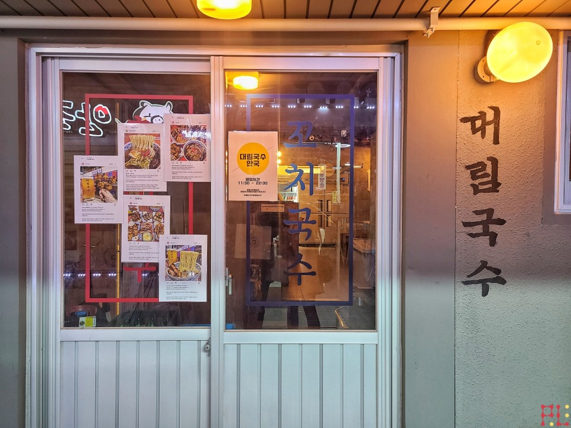

- Alpaka's 맛집 탐방
- Alpaka's 건강 백서
○ Alpaka's 맛집 탐방 Ep13 - 서울 종로구 재동, 대림국수 (안국역)
안녕하세요, PipelinesTeam의 Alpaka🦙 입니다.
맛집 탐방 Ep13. 서울 종로구 재동(안국역)의 '대림국수'
다녀온 후기입니다.

■ 대림국수 안국점
안국역에서 내려 북촌한옥마을로 올라가는 길,
다양한 음식점들과 카페들이 줄지어 있고,
사람들이 가득가득 차 있는 것을 볼 수 있습니다.
북적북적 거리는 도로변 가게들을 지나,
골목길 사이사이 들어가 보면,
쉽게 지나칠 수 있는 가게들 ...
이번에 소개를 시켜드릴 가게,
그렇게 쉽게 지나칠 수 있는 가게 중 하나,
대림상가에서 시작된 '대림국수 안국점' 입니다.